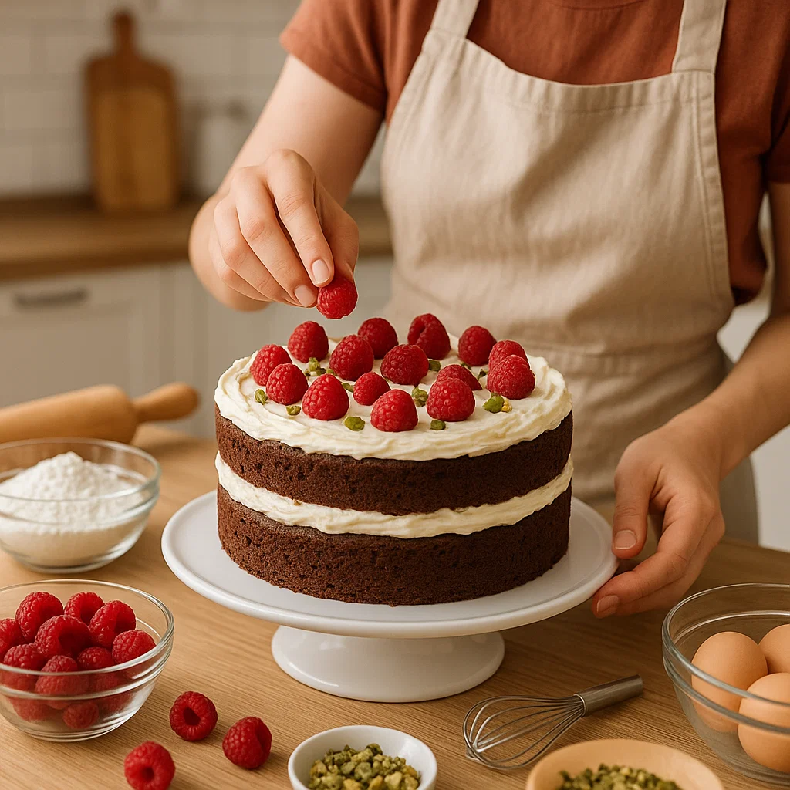

NOTICIAS IMPORTANTES
¡Ganamos el Gran Concurso de Pastelería 2025!
Nos enorgullece anunciar que nuestra pastelería fue premiada en el Gran Concurso Nacional de Pastelería 2025, destacando por nuestras tortas creativas y sabores únicos.
Ver más información
5 Tips de Repostería para Impresionar a Todos
Descubre trucos sencillos para que tus postres luzcan increíbles y tengan un sabor delicioso, perfectos para sorprender en cualquier ocasión.
Ver más información
